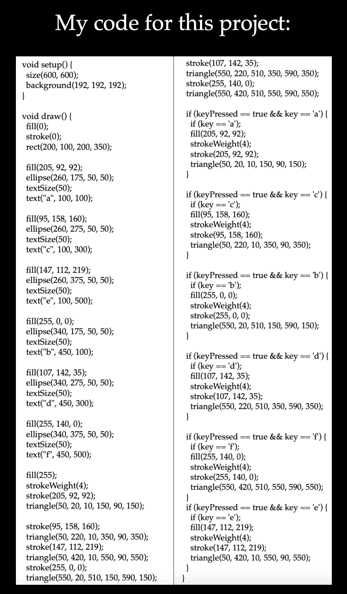
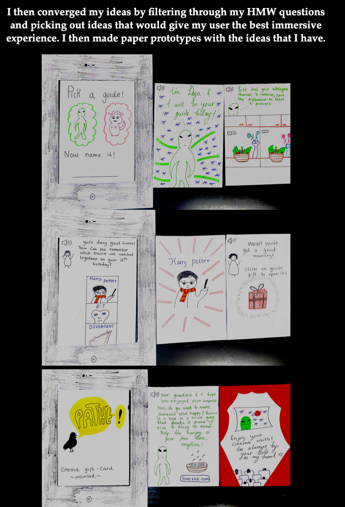

This is one of the projects that I worked on in university. I programmed this project using JavaScript. I created an interactive color matcher game for toddlers. I began by drawing a color palette using a rectangle and six ellipses. It was positioned in the center of the screen. Then I created six triangles with border colors that matched the colors on the palette. Each triangle has a letter next to it that, when pressed on the keyboard, causes the triangles to light up in that color. This will result in six filled triangles of various colors. To do this, I used the keyPressed function. I also gave the triangles a border and a color using the stroke function. Simply press the letters that match to the colors you want to light up to play this game. This game, I believe, would be ideal for toddlers because it is simple but interactive and entertaining. My goal for this project was to create a simple, but engaging, interactive experience that is targeted towards toddlers. This project became doable for me after learning JavaScript in my university's programming bootcamp.
The goal of this project was to characterize myself, my personality, and the key sources of inspiration for me.
I started by writing down things that I truly enjoy doing on a piece of paper.
I then thought of ways that I could present these aesthetically on an app. I thought heavily on the color palette, font, and shapes that id be using for this app. I then brought my vision to life using Adobe XD.
The final product has all the information about me such as my hobbies, interests, & what inspires me in general. What makes information like this appear so fun in an app is the way that it will be presented. It is a very interactive project. To know more about anything, you have to click on the button so it shows you more information. If you didn’t catch what the button and you clicked on it anyway, you won’t have to worry! There is a back button that will take you back.
The purpose of this project was to create a digital gift giving experience for a user that had been assigned to me. In order to do so, I had to learn a lot about my user. I used surveys, five why’s, Object handling observations, collages, and mind maps as my research techniques to get to know my user better. I also conducted several interviews with my user to get to know her better. I am very attentive while gatehring data regarding the user since whaterver experience that I will be building for the user, will be based upon how deeply and attentively I listened. I then take all the data that I've gathered and come up with ideas on how to make this digital gift giving experince come to life and customed to my users taste.
I then made low-fi digital prototypes. I was trying to test out how my high-fi prototype would turn out. It was a quick and easy way for me to translate high-level concepts into something quick and testable. Moreover, it allowed me to check the functionality of my product. I linked the pages to each other trying to see how it would look like if I did it in the same order with my high-fi prototype. My low-fi prototype helped me with testing around how the interactions would work. I added basics of everything that I want to add to my high-fi prototype. For example, I want to have a sci-fi character as a guide in my high-fi prototype, so for my low-fi, I just made a box and wrote “sci-fi character” in it to represent my actual character that will show up in my high-fi. I did this to save Mme. Furthermore, if I wanted to change the direction of my design, it was quite easy to do as I had not illustrated the prototype in too much detail just yet. Overall, creating low-fi prototypes provided me with a much clearer expectation regarding what my final and upcoming project would look like.
I then made my high-fi prototypes. I tried to make the experience as immersive as possible. It is a very engaging experience that keeps the user hooked. I made the design of this experience fit very well with the likes and interests of the user.
Hey there, I'm Asala - an intercultural UX designer with strong desire towards creating user centered interfaces. I use human-centered design to create digital experiences that are intuitive. I'm good at matching human psychology to aesthetics and visualizing potential solutions to any kind of problem and eventually bringing those solutions to life. Currently, I am pursuing a bachelors degree in Communication and Multimedia Design in The Hague University of Applied Sciences. My goal as a designer is to create engaging and accessible user experiences that solve problems in a variety of different fields. I am based in The Hague, Netherlands.